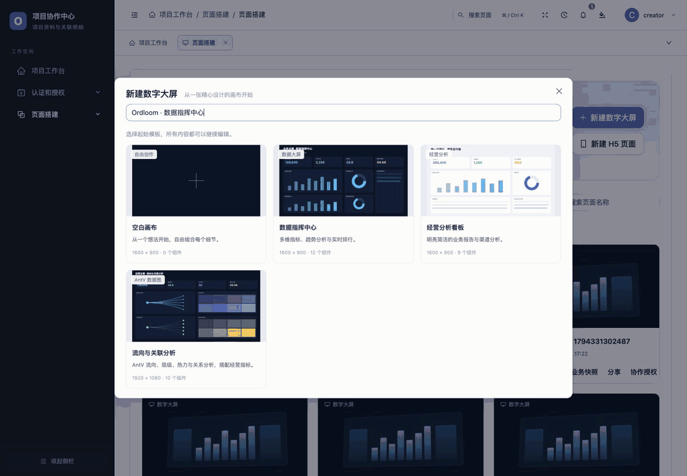
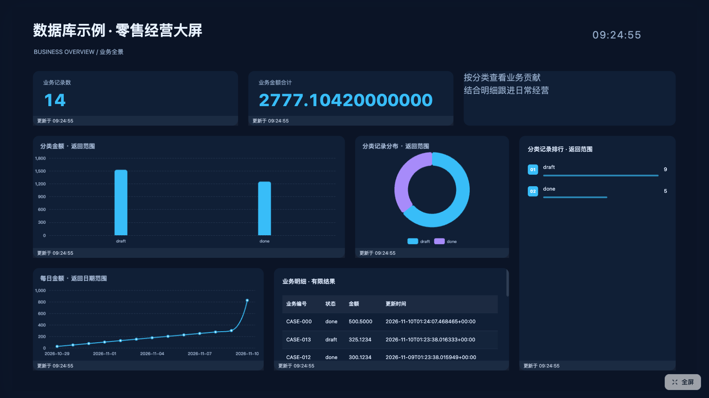
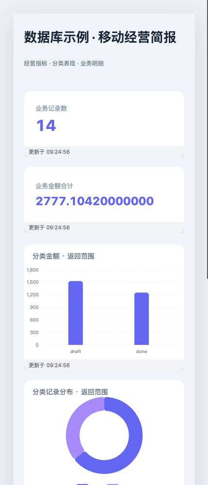
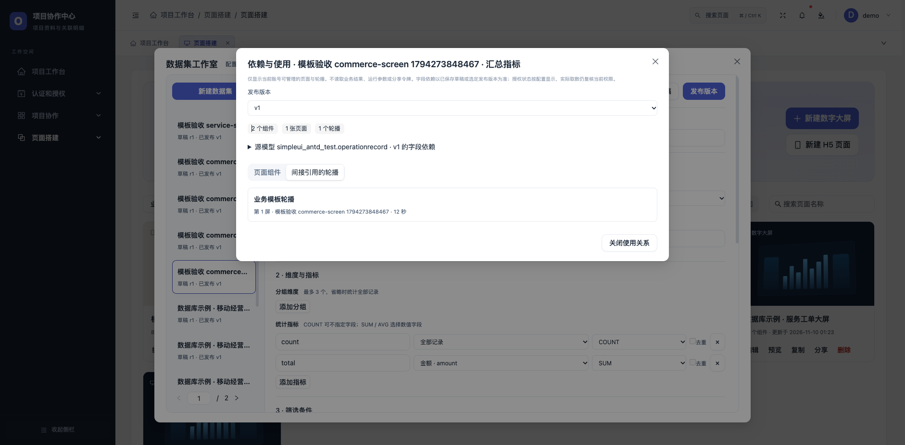
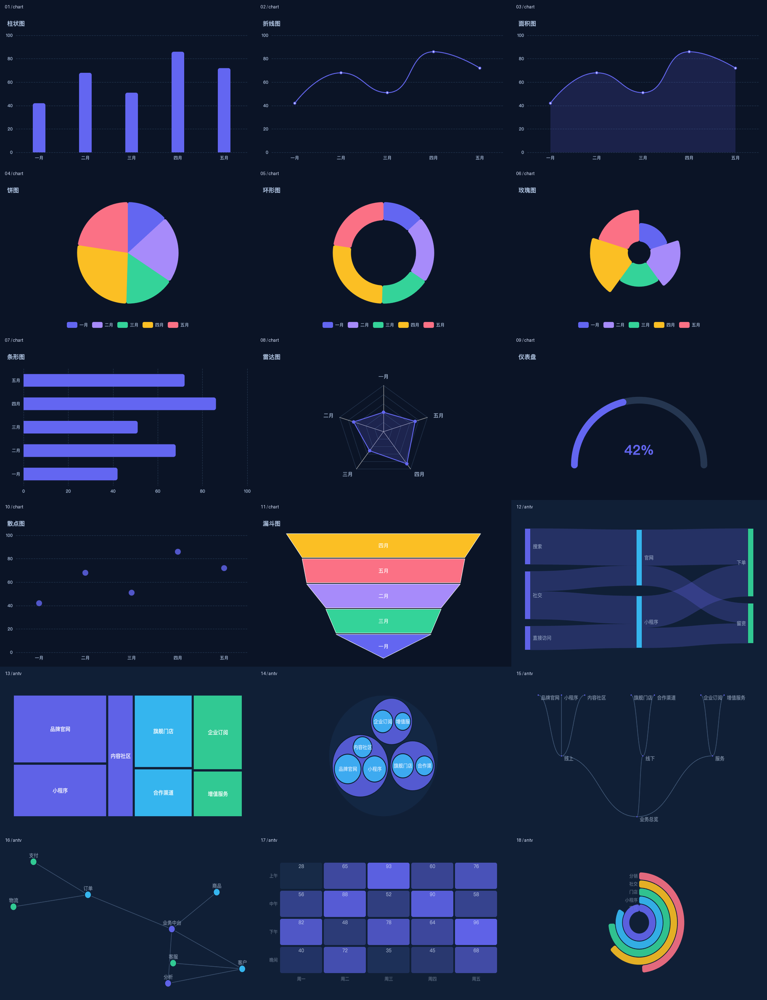
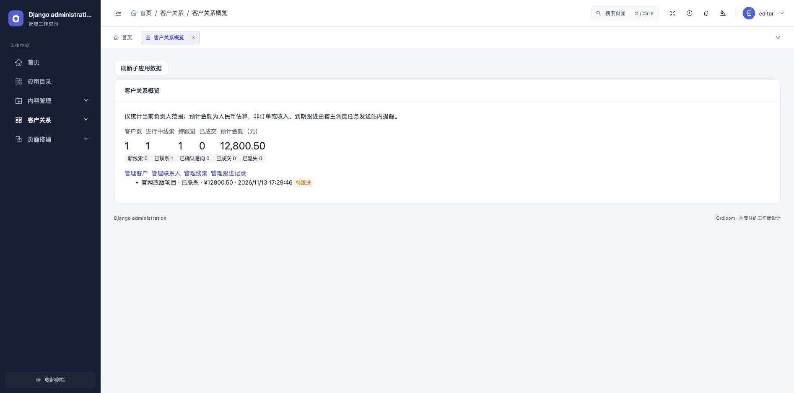

可视化页面搭建
39 种组件拖入画布:文本、指标、图表、表格、轮播、表单……对齐吸附、图层管理、撤销重做、模板起步。
一个 pip 包,接管你的后台:可视化页面搭建、数字大屏、业务报表、表单问卷、数据订阅与企业级安全——零前端工程,装上即用。
pip install ordloom==1.2.0




不写前端,也能交付业务系统。核心能力按需启用,CRM 等业务子应用独立安装。
39 种组件拖入画布:文本、指标、图表、表格、轮播、表单……对齐吸附、图层管理、撤销重做、模板起步。
1600×900 大屏与 375 宽 H5 画板,滚动叙事动画、多屏轮播播放器、全屏放映与免登录公开链接。
选模型 → 维度 → 指标 → 条件 → 图表,聚合报表保存后可嵌入工作台与可视化页面,数据权限始终按实际读取身份执行。
GraphQL 字段目录、类型化筛选与聚合;发布不可变版本,组件绑定明确版本与参数,升级互不影响。
12 种题型、条件显示与跳题、章节分步、服务端校验和历史快照;按当前权限查看结果,支持 CSV/Excel 导出与汇总。
UUID 免登录分享;二维码、访问密码、有效期与关闭分享;页面专用数据授权可随时撤销,只返回映射字段。
模型数据变化经 WebSocket 或签名轮询推送,绑定组件自动重读——刷新间隔、在途合并与隐藏暂停一应俱全。
卡片拖拽排序、宽度与隐藏按账号持久化,5 套工作台模板;业务报表一键嵌入工作台。
两步验证(TOTP)、登录 IP 白名单、会话验证码、连续失败锁定、字段级权限与审计日志 CSV 导出。
SDK v1 统一菜单、概览、搭建组件与任务。每个业务包独立安装,复用宿主模型权限。
ordloom-crm客户、联系人、线索阶段与只追加跟进记录；按客户负责人隔离,到期跟进自动站内提醒。
接入指南ordloom-cms站点、栏目、文章审核与不可变发布快照,连接公开内容与会员专享内容。
接入指南ordloom-members复用宿主账号,提供会员注册登录、资料、业务分组与有效会话管理。
接入指南ordloom-shop商品与 SKU、库存流水、幂等下单和会员订单,支持后台人工履约。
接入指南ordloom-wechat公众号与小程序身份接入、回调验签与收件,显式绑定会员身份。
接入指南ordloom-reminders登记合同、证照和资质到期事项,按负责人扫描,生成去重站内提醒。
接入指南ordloom-tickets受理、指派、状态流转与回复记录,用 SLA 超时提醒跟进服务进度。
接入指南ordloom-assets登记设备与资产,保留领用、归还、维修和报废流水,支持盘点提醒。
接入指南ordloom-events复用会员会话完成活动报名、取消与名额控制,支持员工后台签到。
接入指南把客户、联系人与线索放在同一个工作空间。负责人转交时同步更新数据范围,跟进记录保留历史。
pip install ordloom-crm==0.1.0安装后注册应用、执行迁移并授予模型权限。任务由宿主调度,CRM 在后台使用。
查看 CRM 完整指南 ↗
本轮五个新包与原有 CMS、会员、商城、微信共同组成九应用生态,各业务包版本为 0.1.0。阅读 1.2.0 发布说明 ↗
不必重写业务:保留模型与 Admin 注册,Ordloom 负责界面与体验。
pip install ordloom==1.2.0
# 需要数据集 / 报表 / 订阅时:
pip install 'ordloom[graphql]==1.2.0'发行包内置已构建的前端资源,常规安装不需要 Node.js。
INSTALLED_APPS = [
"django.contrib.admin", …,
"ordloom",
# 按需启用 CRM:
# "ordloom_crm.apps.ExtensionConfig",
]
urlpatterns = [
path("admin/",
include("ordloom.urls")),
path("admin/", admin.site.urls),
]写在原生 Admin 之前即默认接管;`ORDLOOM_FULL_TAKEOVER = False` 可保留原生兜底。
python manage.py migrate
python manage.py createsuperuser
python manage.py runserver访问 /admin/,整个后台即刻换装。Python 3.9+ / Django 4.2+;数据层需 3.10+ 与 Django 5.2+。
从选字段到大屏播放,全程复用当前账号的数据权限。
纯 Python 实现的 TOTP(RFC 6238),认证器扫码即用;登录必须携带动态验证码。
按精确 IP 与 CIDR 网段限制登录来源,未命中一律拒绝。
共享 cache 计数,15 分钟内 5 次失败即锁定,多实例部署一致生效。
操作日志按权限范围过滤并支持 CSV 导出;页面、报表、答卷按创建人隔离;动态字段权限阻止越权推断。